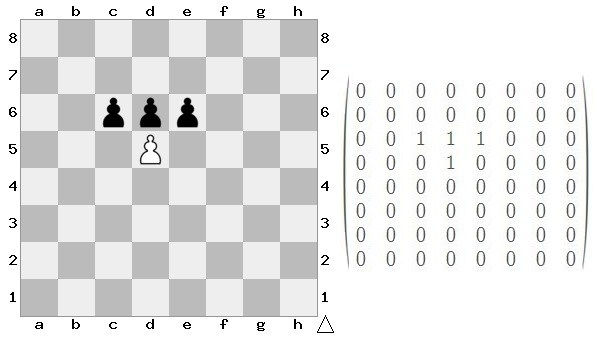
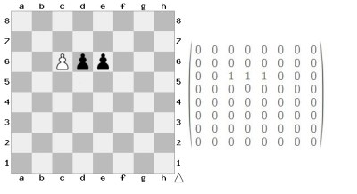
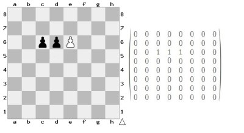

Representing Chess Moves In a -1,1,0 Matrix
I was thinking about ways of representing a game of chess (or checkers) to a computer. Since the 1980’s there’s been a few electronic chess boards that can keep track of all the pieces in the game as you play and play against you. How does the computer recognize which piece is which? I assume that you don’t want to put a specific chip or tag or some other type of marker on each chess piece to identify it for the board. I assume each square of the board knows only “on/off.” So how does it represent the pieces internally?
The simplest way I could think of was to use a series of 1’s and 0’s in an 8 by 8 matrix. Every game of chess begins in the same state. So it would be easy enough to mark off a 1 in each position where a piece is and a 0 where no piece is. The picture below demonstrates what I’m talking about.
The idea is that you could always infer what was moved where because you compare the current matrix to the previous one after each step and make a note of the change. And since the game always begins in the same state you could always trace your way back. It turns out this doesn’t work.
There are two problems here. One is that I hadn’t defined what I meant by a ‘step.’ The second is that I had conceived of step in the game in a standard way. If you define a step as each time a piece is picked up and placed down then yes this method will work fine. If you consider a step in the way it appears in the diagrams of the records of a chess match then this method fails.
To infer what move was made just subtract the current matrix from the previous one. Each time a piece is moved we have a new matrix. Subtract the new matrix from the old. A positive value implies that a piece was moved from that position. A negative value implies that the piece was moved to that position.
The problem comes with the ambiguity of capture. For example imagine a white pawn is facing three black pawns and is able to capture two of them. When a capture happens the matrix doesn’t reflect what was captured. You can tell that the white pawn was moved but you can’t tell where.
The position before moving 
Attacking either pawn produces the same matrix. You can tell a move was made since taking the old matrix minus either new one produces a positive one in the d5 position. But you can’t tell where it was moved to since the white pawn moving to c6 and e6 looks the same. If we’re moving pieces without capturing anything we’d have a negative one in the position where the piece was moved to.  
But there’s a way around this gaff. Make all the black pieces have a value of -1 and all the white pieces have a value of +1.
Then compute the moves normally. To compute a movement ignore the sign of the digit and treat them all as positive. Then sum the absolute value of each element. If this sum changes from the old matrix to the new then a capture was performed. Since we already can tell what piece was moved we next must infer where it was moved to. To do this just subtract the new matrix from the old with the black pieces as negative. This will produce a matrix of zeros with a -2 in the position that was captured.
Still, I suspect this method would have trouble with strange moves (like castling). Which makes me think the boards don’t use this method.
A physical board can register -1,1,0 by having the black pieces have magnets on the bottom of them that are twice as strong as the white pieces. Yet not all of those electronic boards use magnetic chess pieces. Some do but not all of them. Many seem to have a membrane like a keypad. The keys on a keyboard don’t know which finger has click it.
An even simpler way of tracking pieces would be to make a new matrix each time a piece is physically lifted up or set down on the board. Then you could just use a matrix of all 1’s. The only issue that comes to mind with that way of representing things is representing a promotion of a pawn. This method would recognize that a promotion was possible but wouldn’t be able to tell what piece the user chose. Perhaps a prompt is given to the user on those boards at that point in the game.
I’ve never seen one of these electronic chess boards being used so I can’t confirm if it takes a snap shot after every piece is lifted or set down. Either way it’s an incredibly easy way to track the piece movements. To create an internal representation of the board. From there another program has to decide on tactics and strategy. Is there an easier way of internal representation?
A quick note: It’s tempting to use a permutation matrix P and multiply it by the old matrix M to get the new matrix N. So MP = N. Since we know M and N we can multiply both sides by the inverse of M and obtain P. The problem is that M will contain rows and or columns that are all zero which makes it singular. M won’t have an inverse most of the time. Whether a permutation matrix even exists doesn’t matter since we can’t get an inverse for M. So subtraction was chosen as the operation of deduction rather than multiplication.